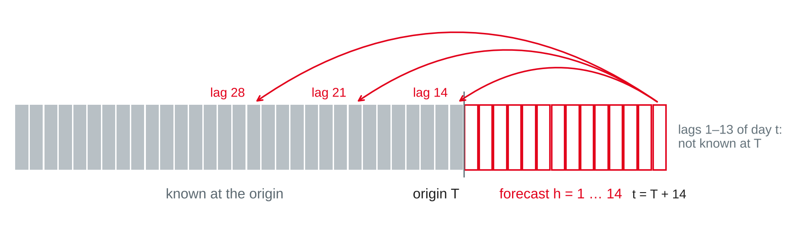
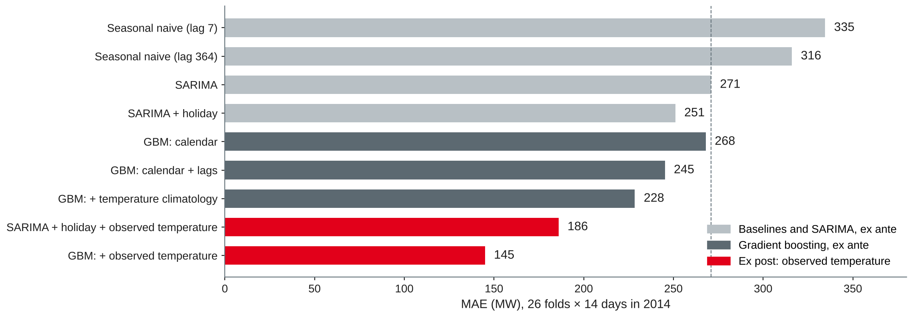
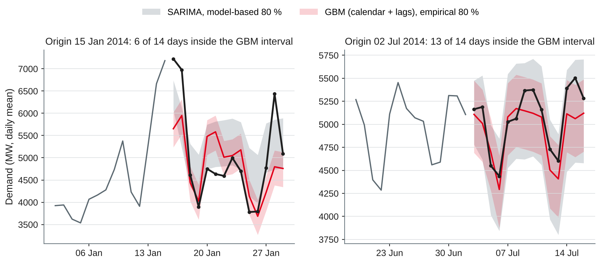

Data Analytics
Forecasting with machine learning · lag and calendar features · external regressors · prediction intervals · demand forecast lab
DHBW Mannheim · Data Science and Artificial Intelligence · Semester 5
| Method (26 folds in 2014) | MAE (MW) |
|---|---|
| Seasonal naive, lag 7 | 335 |
| Seasonal naive, lag 364 | 316 |
| SARIMA(2,0,2)(0,1,1)₇ | 271 |
Today's question: how much do calendar and temperature information improve the 14-day forecast — and how sure can we be about it?
From a series to a feature table
| Feature group | Examples | Source |
|---|---|---|
| Lags | yₜ₋₁₄, yₜ₋₂₈, yₜ₋₃₆₄, mean of a past week | The series itself |
| Calendar | Weekday, day of year, holiday, Christmas period | Date dimension (session 11) |
| External | Temperature, promotions, prices | Other systems or forecasts |
Based on Hyndman and Athanasopoulos (2021, Section 7.4) and Januschowski et al. (2022).

Own illustration based on Ben Taieb et al. (2012), Hyndman and Athanasopoulos (2021, Section 7.6) and scikit-learn developers (n.d.-b).
X["dow"], X["doy"] = y.index.dayofweek, y.index.dayofyear X["holiday"] = daily["Holiday"] # public holiday, Victoria md = y.index.month * 100 + y.index.day X["xmas"] = ((md >= 1224) | (md <= 102)).astype(int) # 24 Dec – 2 Jan
Own example based on Hyndman and Athanasopoulos (2021, Section 7.4); data from O'Hara-Wild et al. (2022).
Forecast made on Wednesday 13 August 2014 (origin) for Wednesday 27 August (h = 14). Which inputs may the model use?
What we know in advance — and what we only pretend to know
| Kind | Examples | In the forecast |
|---|---|---|
| Known in advance | Calendar, public and school holidays, own promotions, planned price changes | Use as they are |
| Must be forecast | Weather, economic indicators, competitor prices | Use a forecast — its errors add to ours |
| Not available | Same-day sales of other shops, the actual weather | Only for explanation, not for forecasting |
Based on Hyndman and Athanasopoulos (2021, Section 7.6).
| Scenario | Temperature of the target day | Type |
|---|---|---|
| None | Not used | Ex ante |
| Climatology | Mean daily maximum of the training years, ±7 days around the date | Ex ante, no skill |
| Observed | Measured maximum | Ex post: a perfect forecast |
Based on Hyndman and Athanasopoulos (2021, Sections 7.6 and 10.3); data from O'Hara-Wild et al. (2022).
from statsmodels.tsa.statespace.sarimax import SARIMAX
ex = lambda d: np.column_stack([d["Holiday"], d["Temperature"],
d["Temperature"] ** 2])
fit = SARIMAX(train["Demand"], exog=ex(train), order=(2, 0, 2),
seasonal_order=(0, 1, 1, 7)).fit(disp=False)
fc = fit.get_forecast(14, exog=ex(future)) # future regressors requiredBased on Hyndman and Athanasopoulos (2021, Sections 10.1–10.3); own example with statsmodels (Seabold & Perktold, 2010).

Own illustration with data from O'Hara-Wild et al. (2022); models with scikit-learn (Pedregosa et al., 2011) and statsmodels (Seabold & Perktold, 2010).
| Model (2014) | MAE | RMSE | MAE Jan–Feb | MAE Mar–Dec |
|---|---|---|---|---|
| SARIMA (session 12) | 271 | 418 | 659 | 200 |
| GBM: calendar + lags | 245 | 379 | 594 | 182 |
| GBM: + climatology | 228 | 385 | 639 | 154 |
| GBM: + observed temperature (ex post) | 145 | 222 | 343 | 109 |
Own analysis with scikit-learn (Pedregosa et al., 2011) and statsmodels (Seabold & Perktold, 2010); data from O'Hara-Wild et al. (2022).
How sure are we?
A grid operator does not ask "how much demand?", but "how much capacity so that demand is higher on at most one day in ten?" — that is the 90 % quantile.
Based on Hyndman and Athanasopoulos (2021, Section 5.5).
Model-based
ŷ ± c · σ̂ₕ with c = 1.28 (80 %) or 1.96 (95 %). From SARIMA or ETS directly; assumes normal, uncorrelated errors.
Quantile regression
Train one model per quantile, e.g. 10 % and 90 %, with the pinball loss. Works with any features; no distribution assumed.
Empirical
Add quantiles of past forecast errors to the point forecast — errors from cross-validation on a validation year, not in-sample residuals.
Based on Hyndman and Athanasopoulos (2021, Sections 5.5 and 7.6), scikit-learn developers (n.d.-b) and Januschowski et al. (2022).
Pinball loss for quantile p, with forecast q:
lo = HistGradientBoostingRegressor(loss="quantile", quantile=0.1,
max_iter=100, min_samples_leaf=50, random_state=0).fit(X_tr, y_tr)
hi = HistGradientBoostingRegressor(loss="quantile", quantile=0.9,
max_iter=100, min_samples_leaf=50, random_state=0).fit(X_tr, y_tr)Based on Hyndman and Athanasopoulos (2021, Section 5.9) and scikit-learn developers (n.d.-a, n.d.-b).
| Measure | Question | Target |
|---|---|---|
| Coverage | Share of actuals inside the interval | Close to the nominal 80 % |
| Width | Average upper − lower bound | As narrow as possible at correct coverage |
| Winkler score | Width + 2/α × distance outside | Lower is better; α = 0.2 for 80 % |
Based on Hyndman and Athanasopoulos (2021, Section 5.9).
80 % intervals from the lab model (calendar + lags), origin Wednesday 15 January 2014:
| Day | Actual | Forecast | Lower | Upper |
|---|---|---|---|---|
| Thu 16 Jan | 7,223 | 5,653 | 5,236 | 6,020 |
| Fri 17 Jan | 6,976 | 5,949 | 5,532 | 6,316 |
| Sat 18 Jan | 4,615 | 4,440 | 4,022 | 4,806 |
| Sun 19 Jan | 3,898 | 4,026 | 3,609 | 4,393 |
| Mon 20 Jan | 4,752 | 5,480 | 5,063 | 5,847 |
| 80 % interval | Coverage | Jan–Feb | Mar–Dec | Width | Winkler |
|---|---|---|---|---|---|
| SARIMA, model-based | 85.7 % | 39.3 % | 94.2 % | 1,022 | 1,530 |
| SARIMA + holiday, model-based | 88.2 % | 41.1 % | 96.8 % | 951 | 1,388 |
| GBM quantile, default settings | 51.1 % | 44.6 % | 52.3 % | 431 | 1,330 |
| GBM quantile, regularised | 74.7 % | 57.1 % | 77.9 % | 661 | 1,222 |
| GBM + empirical (2013 errors) | 82.4 % | 37.5 % | 90.6 % | 784 | 1,356 |
| Ex post: GBM + temperature, empirical | 88.2 % | 57.1 % | 93.8 % | 570 | 805 |
Own analysis with scikit-learn (Pedregosa et al., 2011) and statsmodels (Seabold & Perktold, 2010); data from O'Hara-Wild et al. (2022).

Own illustration with data from O'Hara-Wild et al. (2022), based on Hyndman and Athanasopoulos (2021, Sections 5.5 and 5.9).
Gradient boosting, regressors and intervals with the session 12 folds
import numpy as np, pandas as pd
from sklearn.ensemble import HistGradientBoostingRegressor
from sklearn.model_selection import TimeSeriesSplit
# daily, y = daily["Demand"].asfreq("D") from the session 11 lab starter
X = pd.DataFrame(index=y.index)
X["dow"], X["doy"] = y.index.dayofweek, y.index.dayofyear
X["holiday"] = daily["Holiday"]
md = y.index.month * 100 + y.index.day
X["xmas"] = ((md >= 1224) | (md <= 102)).astype(int) # 24 Dec – 2 Jan
for k in (14, 21, 28, 364): # only lags >= 14
X[f"lag{k}"] = y.shift(k)
X["mean7_lag14"] = y.shift(14).rolling(7).mean() # days t-20 ... t-14
X["temp"] = daily["Temperature"] # observed: ex post!Own example with scikit-learn (Pedregosa et al., 2011); data from O'Hara-Wild et al. (2022).
def cv_gbm(cols, end="2014-12-31"):
yy, E = y[:end], []
for tr, te in TimeSeriesSplit(n_splits=26, test_size=14).split(yy):
m = HistGradientBoostingRegressor(max_iter=300, learning_rate=0.05,
random_state=0)
m.fit(X.iloc[tr][cols], yy.iloc[tr])
E.append(yy.iloc[te].to_numpy() - m.predict(X.iloc[te][cols]))
return np.array(E) # 26 folds × 14 days
cols = ["dow", "doy", "holiday", "xmas",
"lag14", "lag21", "lag28", "lag364", "mean7_lag14"]
E_val, E_test = cv_gbm(cols, "2013-12-31"), cv_gbm(cols)
lo, hi = np.quantile(E_val, [0.1, 0.9]) # calibrated on 2013
print(np.abs(E_test).mean(), lo, hi, ((E_test >= lo) & (E_test <= hi)).mean())Own example based on Hyndman and Athanasopoulos (2021, Sections 5.5 and 5.10) and scikit-learn developers (n.d.-c).
Work in pairs on the daily demand series (O'Hara-Wild et al., 2022); keep everything for notebook 3.
Preparation: finish today's lab table (point and interval results) — notebook 3 starts from it. Try worksheet 13 and think about which of your company's series would need a global model.